Les familles Boliva, Raymond et Rouvier sont heureuses de vous faire part du mariage de leurs enfants.
Notre histoire
« Deux chemins, une belle rencontre, et une aventure qui continue... Nous sommes heureux de vous inviter à célébrer notre mariage. »
Découvrir le programme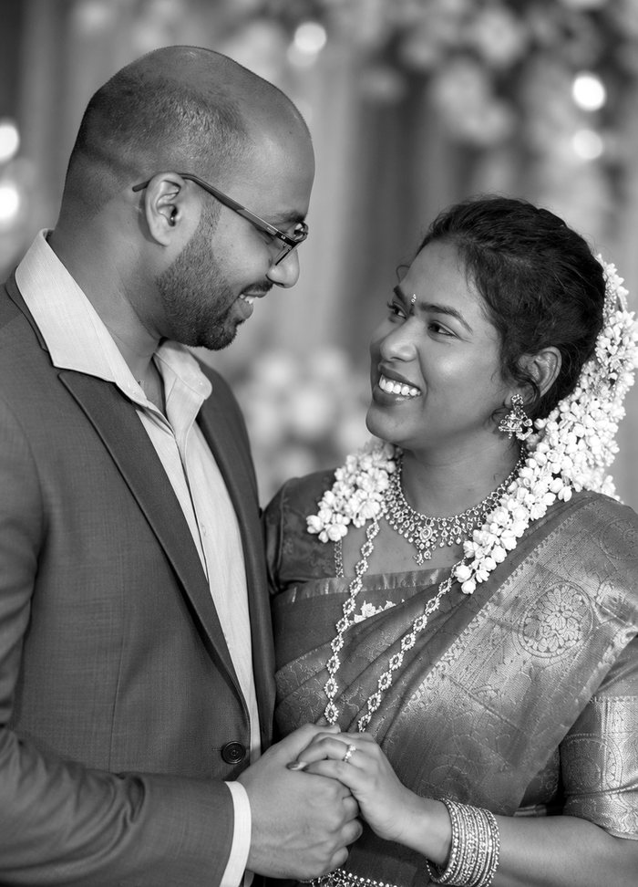
Avant notre mariage
Fabrice & Marguerite se sont dit oui !
Merci d'avoir partagé ce jour avec nous
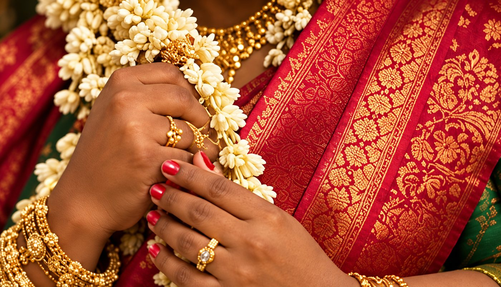
Le programme
-
14h
Cérémonie civile
Mairie de Pantin
45 avenue du Général-Leclerc
Voir l'itinéraire
93500 Pantin -
16h30
Cérémonie religieuse
Église Notre-Dame-de-Pontmain
60 avenue de la République
93170 BagnoletCélébrée par le Père Cyril Sandou et le Père Arsène.
Voir l'itinéraire -
19h
Réception
Espace Noisy-le-Sec
14 rue de la Pointe
Voir l'itinéraire
93130 Noisy-le-Sec
En images
Quelques instants de notre histoire, avant le grand jour.
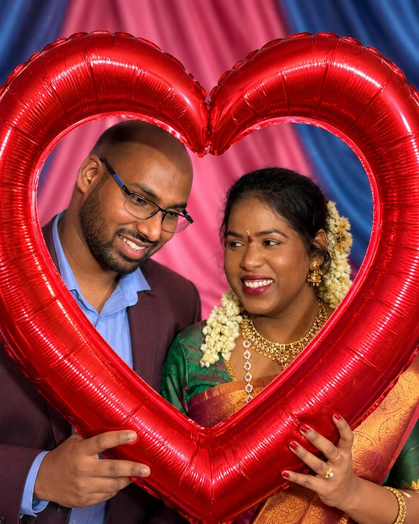
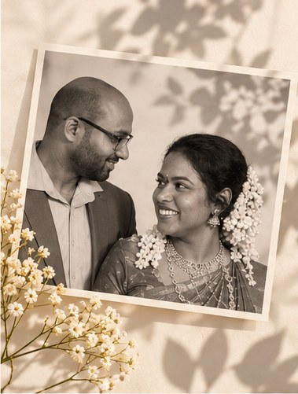
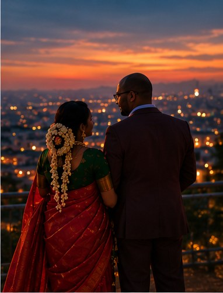
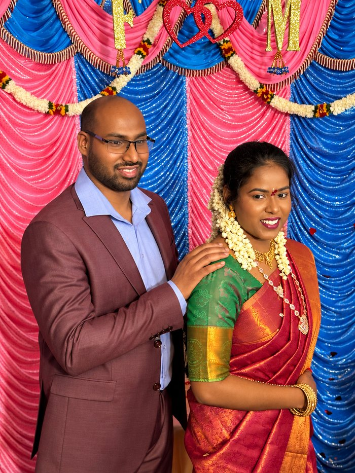
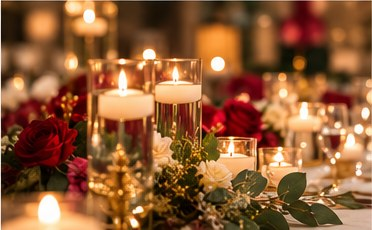
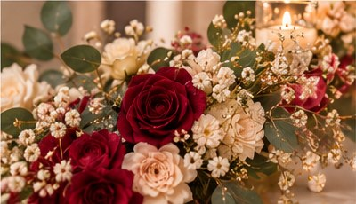
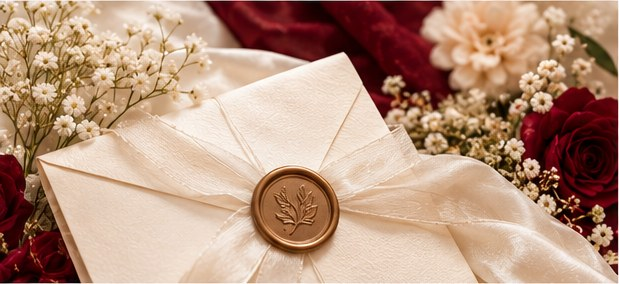
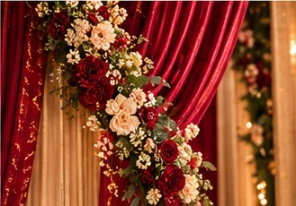
Infos pratiques
Vendredi 6 novembre 2026
Pantin · Bagnolet · Noisy-le-Sec
Église Notre-Dame-de-Pontmain
60 avenue de la République, 93170 Bagnolet
Itinéraire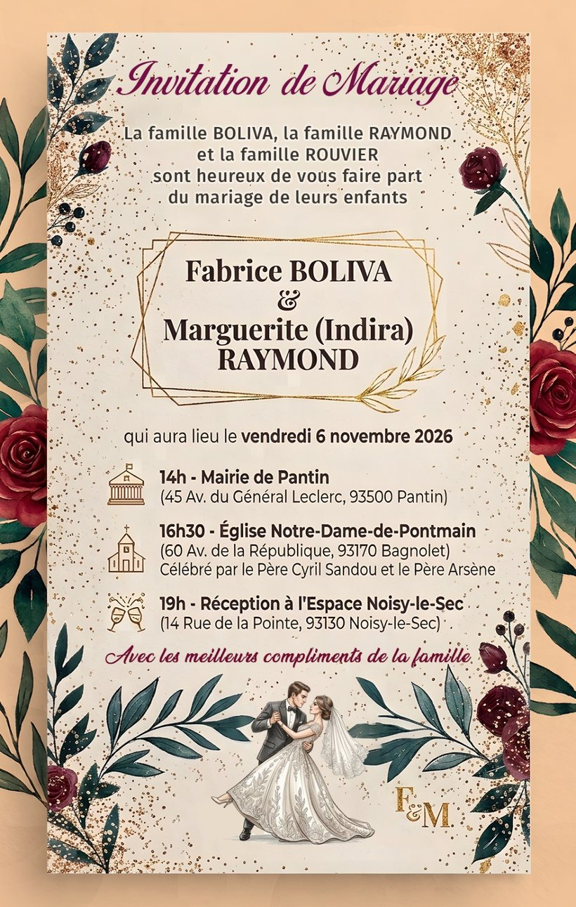

Votre réponse
« Merci de nous faire part de votre présence pour cette journée si spéciale. »
Mode démonstration : ce serveur n'enregistre pas les réponses. Merci de répondre directement aux mariés.
Fabrice & Marguerite
6 novembre 2026
« Avec les meilleurs compliments de la famille. »
Les familles Boliva, Raymond et Rouvier